A pedra que vira protagonista do ambiente.
Pedras naturais selecionadas para projetos de alto padrão que valorizam a arquitetura.
A verdadeira sofisticação está na autenticidade dos materiais.
Na AL Revestimentos Exclusivos, cada pedra natural é escolhida a dedo para projetos de alto padrão. Mais do que um revestimento, ela se torna parte da arquitetura, criando ambientes elegantes, acolhedores e atemporais.
Selecionamos as referências mais atuais e exclusivas do mercado, pedras que unem design, qualidade e personalidade. Porque escolher uma pedra natural é investir em um material único, criado pela natureza e valorizado pelo tempo.
Quando a pedra certa entra no projeto, ela deixa de ser um detalhe e se torna protagonista.
Textura marcante, presença imponente e uma conexão genuína com a natureza. A pedra que transforma o ambiente e atravessa tendências.
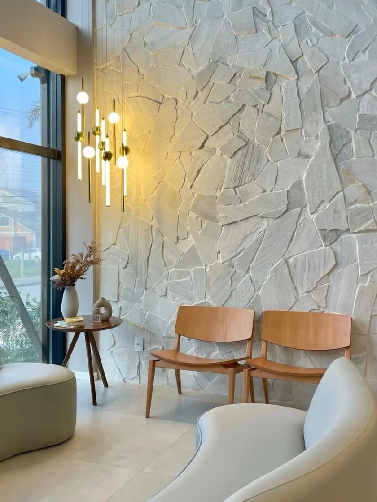
As pedras da AL
Uma curadoria de pedras naturais para cada parte do projeto, do ambiente de destaque à área externa.
Alguns dos revestimentos
exclusivos que trabalhamos
Travertinos & Especiais
- Travertino Rockface
- Rockface Travertino Cairo
- Quartzito Branco
- Pedra Ferro
Paredes & Fachadas
- Pedra Miracema
- Pedra Moledo Champanhe
- Pedra Moledo Branca
- Pedra Moledo Travertino
- Pedra Madeira Branca
- Pedra Madeira Black
- Pedra Madeira Champanhe
- Pedra La Roccia Orgânica
- Pedra La Roccia em Filete
Pedras para Piscina
- Pedra Hijau
- Pedra Sabão BJ
Pisos & Áreas Externas
- Pisante em Pedra Branca
- Pisante Levigado
- Bordas de Piscina
Ambientes que a pedra transforma
Projetos de alto padrão onde a pedra natural define a atmosfera do espaço.
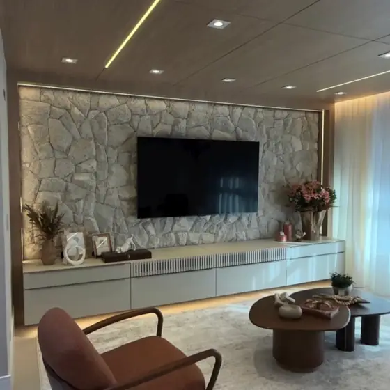
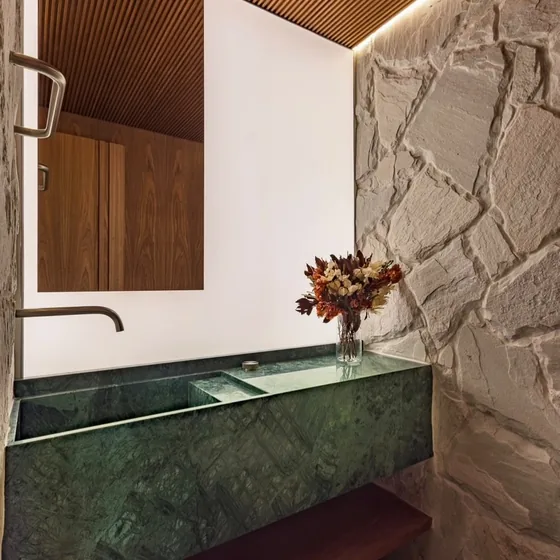
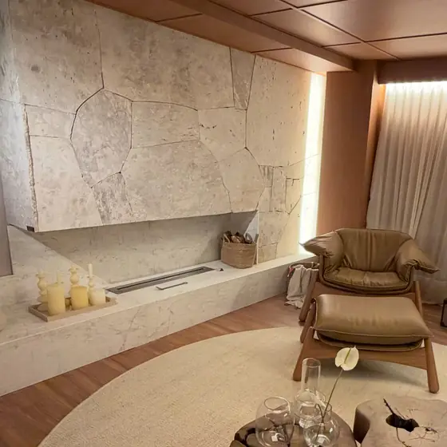
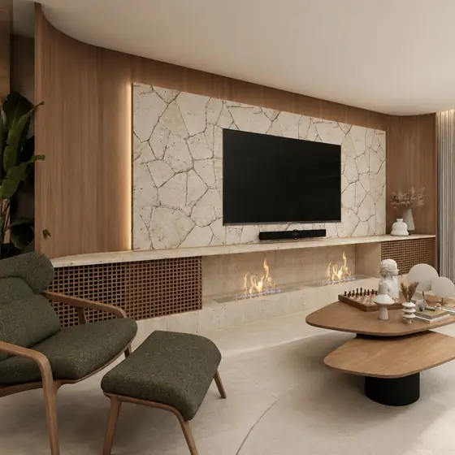
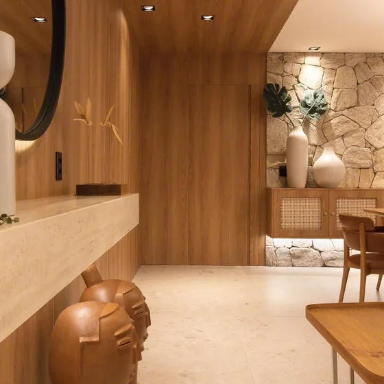
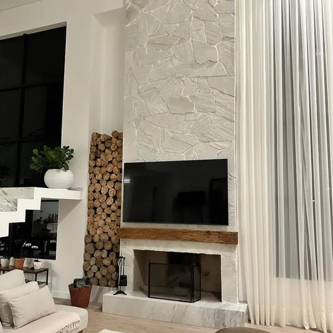
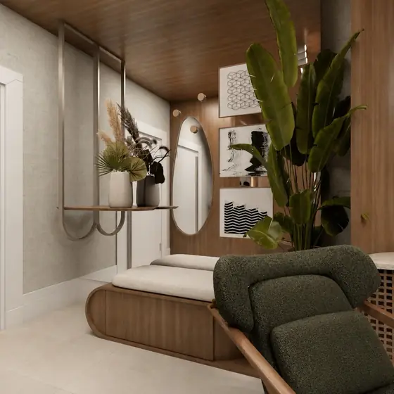
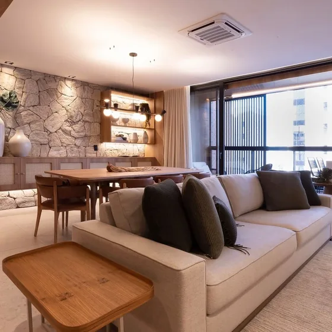
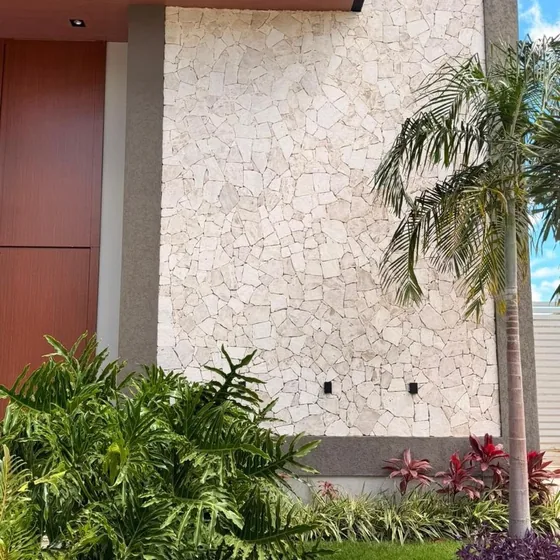
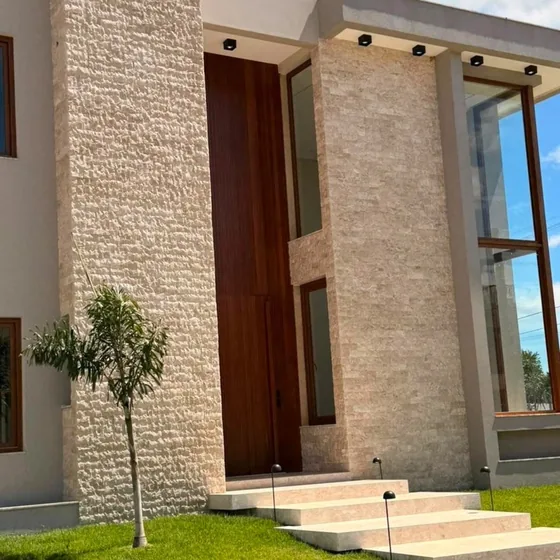
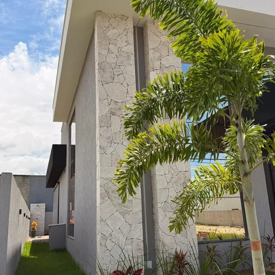
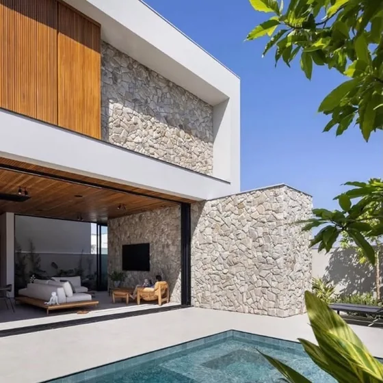
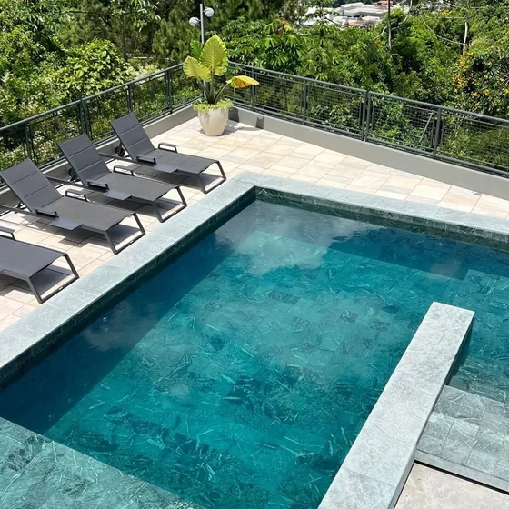
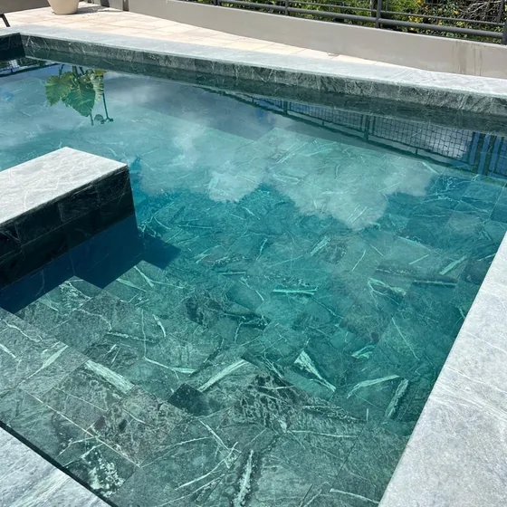
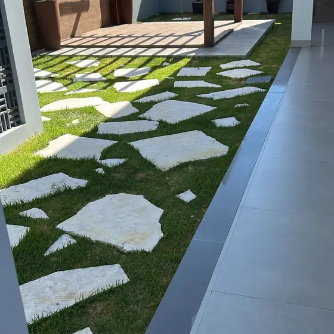
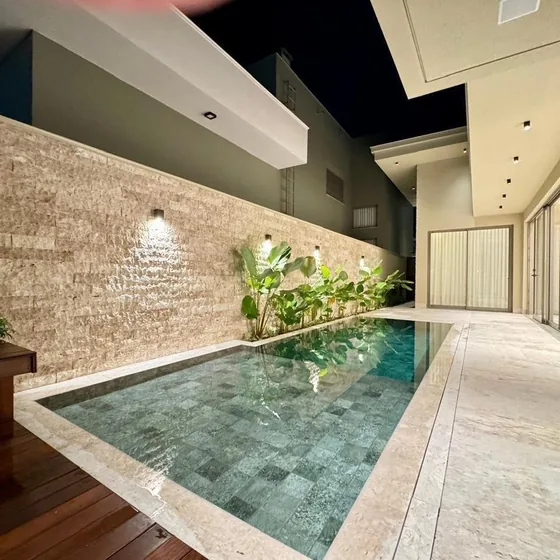
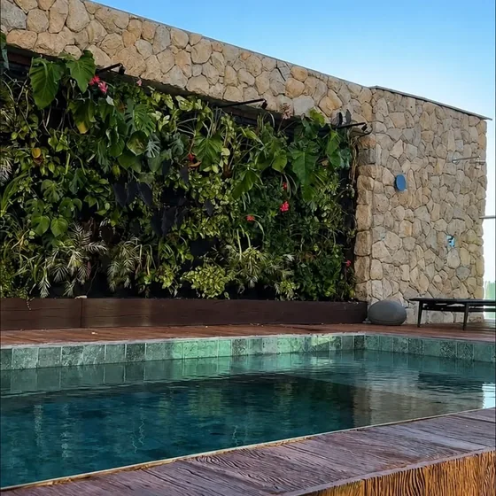
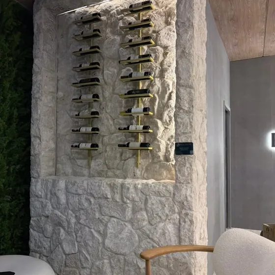
Por que escolher
AL Revestimentos Exclusivos?
Curadoria
As referências mais atuais e exclusivas do mercado de pedras naturais, selecionadas a dedo.
Exclusividade
Cada pedra é única. É essa exclusividade que torna cada projeto incomparável.
Autenticidade
Materiais criados pela natureza, com textura e caráter que nenhuma superfície industrial reproduz.
Alto padrão
Pedras selecionadas para projetos que valorizam a arquitetura, ao lado de arquitetos e clientes exigentes.
Vamos dar à sua obra a pedra que ela merece.
Conte seu projeto e receba uma seleção de pedras naturais sob medida, com o padrão que a AL entrega.